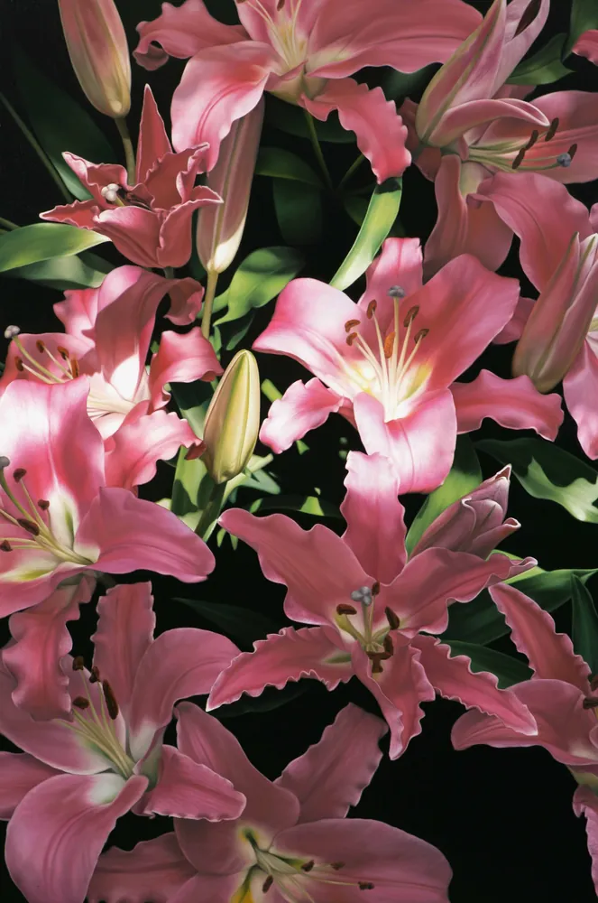

Collections
Selected works in collections
Compiled from the collection and auction records in the artist’s portfolio, arranged by series. Collectors are identified by sector only, never by name.
Auction records

Magenta LilyPoly Auction Hong Kong, 2020 Take a Walk No.36, 2007–2009Poly Auction Hong Kong, 2020
Take a Walk No.36, 2007–2009Poly Auction Hong Kong, 2020
Realism (Zhi Xiang)
 Acacia HillPrivate collection (manufacturing)
Acacia HillPrivate collection (manufacturing) Banana Plant, 2011Private collection (medical profession)
Banana Plant, 2011Private collection (medical profession) Banana GrovePrivate collection (technology industry)
Banana GrovePrivate collection (technology industry)
Take a Walk
 Take a Walk No.28, 2009Private collection (medical profession)
Take a Walk No.28, 2009Private collection (medical profession) Take a Walk No.26, 2009Private collection (legal profession)
Take a Walk No.26, 2009Private collection (legal profession) Take a Walk No.1, 2009Private collection (construction)
Take a Walk No.1, 2009Private collection (construction) Take a Walk No.5, 2009Private collection (construction)
Take a Walk No.5, 2009Private collection (construction) Take a Walk No.13, 2009Private collection (construction)
Take a Walk No.13, 2009Private collection (construction) Take a Walk No.14, 2009Private collection (construction)
Take a Walk No.14, 2009Private collection (construction) Take a Walk No.17, 2009Private collection (construction)
Take a Walk No.17, 2009Private collection (construction)
Cloud, Mountain, Water


Flower — Form and Colour
 White Roses-1, 2011Private collection (steel industry)
White Roses-1, 2011Private collection (steel industry) White Roses-2, 2011Private collection (food industry)
White Roses-2, 2011Private collection (food industry) Pink-Orange Roses-1, 2011Private collection (performing arts)
Pink-Orange Roses-1, 2011Private collection (performing arts) Oriental Lilies, 2011Private collection (legal profession)
Oriental Lilies, 2011Private collection (legal profession) Yellow Lilies-2, 2012Private collection (art dealing)
Yellow Lilies-2, 2012Private collection (art dealing)
Millennial Splendour
 Millennial Splendour-1, 2012Private collection (land development)
Millennial Splendour-1, 2012Private collection (land development) Millennial Splendour-3, 2012Private collection (manufacturing)
Millennial Splendour-3, 2012Private collection (manufacturing) Millennial Splendour-4, 2012Private collection (land development)
Millennial Splendour-4, 2012Private collection (land development)
Guang Bian (Light Shift)
 Guang Bian No.21, 2018Private collection (art dealing)
Guang Bian No.21, 2018Private collection (art dealing) Guang Bian No.24, 2017–2018Private collection (traditional industry)
Guang Bian No.24, 2017–2018Private collection (traditional industry)